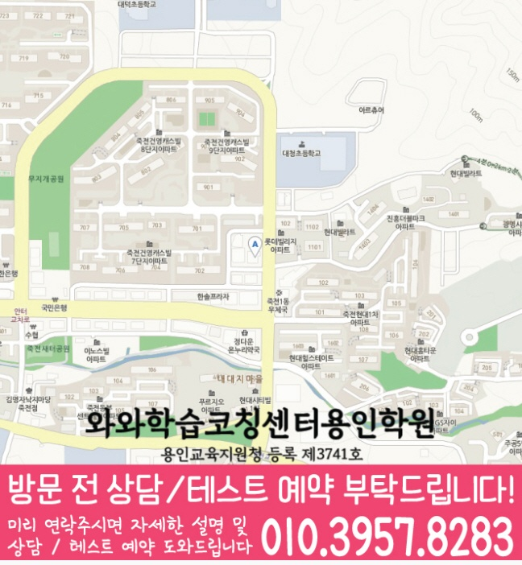

무조건 많이 푸는 방식이 아니라, 개념 이해도와 풀이 습관을 먼저 점검해 학생에게 맞는 학습 순서를 설계합니다.
지역별 수강 안내
죽전동학원 영어수학 전문학원
방문할 지점과 수강 조건
대구장기점 수강 정보
- 연결 지점
- 대구장기점와와학습코칭학원
- 자료에 기재된 과목
- 국어 · 영어 · 수학 · 과학 · 사회
- 방문 주소
- 대구 달서구 장기로 252 장기협성휴포레 2층 209,210
대구장기점 자료에 기재된 과목별 수강 범위는 국어 초2~초6 / 중1~중3 / 고1 · 영어 초2~초6 / 중1~중3 / 고1~고2 · 수학 초2~초6 / 중1~중3 / 고1~고2 · 과학 중1~중3 · 사회 중1~중3입니다. 현재 모집 여부는 지점에 확인해 주세요.
선생님 소개
대구장기점 선생님을 만나보세요
선생님의 인사와 학습 지도 방향을 살펴보고, 상담에서 궁금한 내용을 준비해 보세요.
대구 달서구 죽전동에서 영어·수학·국어 학원을 찾는 학생을 위해, 현재 실력 진단부터 개념 정리, 문제풀이, 오답 관리까지 이어지는 학습 흐름을 안내합니다. 와와학습코칭센터는 학생마다 다른 학습 속도와 목표를 확인해 꾸준히 실력이 쌓이도록 수업과 코칭을 함께 진행합니다.
죽전동 수업의 핵심 포인트
영어는 어휘·문법·독해 흐름, 수학은 개념·유형·오답 원인을, 국어는 문학/비문학 독해 전략과 문제 풀이를 체계적으로 관리합니다.
선생님 특징
학생이 어디에서 막히는지 질문과 풀이 과정을 통해 확인하고, 부족한 개념을 다시 연결해 이해가 먼저 자리 잡게 돕습니다.
숙제·복습·오답 정리 루틴을 꾸준히 점검해 수업 시간이 일회성으로 끝나지 않도록 습관을 함께 만듭니다.
수업 진행방식
1. 현재 수준 확인
학년, 학교 진도, 최근 시험 흐름을 바탕으로 부족한 단원과 자주 틀리는 유형을 정리합니다.
2. 개념 정리와 유형 학습
바로 문제풀이로 들어가기보다 핵심 개념을 먼저 정리한 뒤, 대표 유형부터 응용 문제까지 단계적으로 연습합니다.
3. 오답 관리와 학습 피드백
틀린 문제를 단순 재풀이로 끝내지 않고, 왜 틀렸는지와 다음에 어떻게 풀어야 하는지를 학습 계획에 반영합니다.
학년별 학습 전략
초등
- 기초 개념을 탄탄히 하고 영어 어휘·독해 습관과 수학 연산/기초 개념을 안정적으로 잡습니다.
- 국어는 독해 흐름과 문제 유형을 익혀 중등 과정의 핵심 기반을 부담 없이 준비합니다.
중등
- 학교 진도와 내신 대비를 함께 관리하며, 영어 문법·독해와 수학 단원별 유형을 반복 점검합니다.
- 국어는 비문학 독해 전략과 문학 작품 접근법을 체계적으로 훈련해 점수를 끌어올립니다.
고등
- 내신과 수능형 문제풀이를 구분해 학습 전략을 세우고, 시간 관리와 오답 패턴을 집중적으로 관리합니다.
- 영어는 독해·문법 적용, 수학은 단원별 취약 유형 보완, 국어는 선지 판단과 독해 정확도를 강화합니다.
시험 대비
- 학교별 시험 범위와 출제 경향에 맞춰 복습 계획을 조정해 효율적으로 준비합니다.
- 시험 전에는 실수 유형과 자주 틀리는 문제를 우선 점검해 단기간 성과를 목표로 합니다.
죽전동 와와학습코칭센터는 학생의 현재 상태를 기준으로 필요한 학습을 정리하고, 상담을 통해 영어·수학·국어 학습 방향을 자세히 안내드립니다.
센터 위치 안내
주소
대구 달서구 장기로 252 장기협성휴포레 2층 209,210
오시는 길
장동초등학교 앞 버스정류장 바로 앞, 장기협성휴포레 상가 2층입니다. 1층에 한솥도시락이 있습니다.
상담에 참고할 학교 목록
학교별 내신 수업과 수강 가능 여부는 센터에 확인해 주세요.
초등학교
대구성당초등학교
대구장기초등학교
대구장동초등학교
대구죽전초등학교
중학교
원화중학교
고등학교
학교 정보는 센터에 문의해 주세요.
과목별 수강 가능 학년
국어
초2
초3
초4
초5
초6
중1
중2
중3
고1
영어
초2
초3
초4
초5
초6
중1
중2
중3
고1
고2
수학
초2
초3
초4
초5
초6
중1
중2
중3
고1
고2
과학
중1
중2
중3
사회
중1
중2
중3
학원 등록 정보
교육비 참고와 확인할 조건
대구장기점 수업료 안내
| 대상 | 과목·과정 | 수업 구성 | 안내 금액 |
|---|---|---|---|
| 초등 | 국어 | 주 2회, 1회 2시간 | 140,000원 |
| 중등 | 국어 | 주 2회, 1회 2시간 | 152,000원 |
| 중등 | 국어 | 주 2회, 1회 3시간 | 217,000원 |
| 고등 | 국어 | 주 1회, 1회 3시간 | 175,000원 |
| 고등 | 국어 | 주 2회, 1회 3시간 | 325,000원 |
센터 안내 자료에 기재된 금액입니다. 수강 가능 학년, 과목, 수업 시간과 추가 프로그램에 따라 달라질 수 있으므로 최종 교습비는 센터에 확인해 주세요.
상담부터 오답관리까지 이어지는 학습 흐름
전국학원은 동네별 학원 정보를 안내할 때도 단순 위치 안내에 그치지 않고, 학생의 현재 상태를 어떻게 확인하고 관리할지 함께 살펴볼 수 있도록 구성합니다.
상담과 현재 상태 확인
학교·학년, 최근 성적, 어려운 과목, 숙제 수행, 공부 시간, 목표를 확인해 먼저 해결할 문제를 정리합니다.
교과와 학습행동 진단
개념 결손, 계산 실수, 문제 해석, 복습 부족처럼 공부가 막히는 원인을 나누어 시작 교재와 진도를 정합니다.
플래너 실행 점검
과목·단원·분량·완료 기준을 적고 실제 실행 결과를 기록해 다음 학습량과 복습 주기를 조정합니다.
오답 원인 분석과 재학습
틀린 이유를 개념, 조건 누락, 실수, 시간 부족 등으로 구분하고 유사 문제와 반복 복습으로 연결합니다.
CONSULTING CHECKLIST
죽전동학원 영어수학 전문학원 상담 전 체크리스트
실제 상담 전 아래 항목을 확인하면 학생에게 필요한 영어·수학 학습 방향을 더 빠르게 정리할 수 있습니다.
- 현재 교재사용 중인 교재와 진도를 확인합니다.
- 최근 시험지점수보다 반복되는 오답 유형을 확인합니다.
- 공부 시간평소 공부 시간과 숙제 수행 정도를 봅니다.
- 상담 목표성적, 습관, 오답, 시험 대비 중 우선순위를 정합니다.
STUDY GUIDE
죽전동 영어·수학 학원 선택 전 확인할 학습 포인트
죽전동에서 학원을 찾을 때는 위치만큼이나 학생의 현재 학습 상태, 학교 진도, 과목별 약점, 시험 일정에 맞춰 관리가 가능한지 확인하는 것이 중요합니다.
최근 시험지와 숙제 습관을 함께 확인하면 단순 점수보다 부족한 단원과 공부 루틴을 더 정확히 파악할 수 있습니다.
영어·수학을 따로 보는 것보다 플래너, 오답, 내신 대비 흐름까지 함께 관리되는지 확인하면 상담 방향이 선명해집니다.
학년별 공부법과 시험기간 계획표를 먼저 읽어보면 상담 전 질문을 더 구체적으로 준비할 수 있습니다.
대구 달서구 죽전동 상담 전 체크
최근 시험지, 학교 진도, 어려운 단원, 숙제 수행 정도를 함께 정리해두면 상담에서 학생에게 필요한 학습 순서를 더 빠르게 잡을 수 있습니다.
함께 보면 좋은 학습가이드
현재 페이지의 학년·과목과 연결되는 정보성 콘텐츠입니다. 지역 페이지와 함께 읽으면 상담 준비와 학습 계획을 더 구체화할 수 있습니다.
죽전동 관련 학원 페이지
현재 보고 있는 지역 안에서 센터 안내와 학년·과목별 상세 페이지로 바로 이동할 수 있습니다.
죽전동 영어수학 학원 상담이 필요하신가요?
학생의 현재 학습 상황과 목표를 정리해 상담문의로 남겨주시면, 학습 방향을 더 구체적으로 확인할 수 있습니다.
상담문의LOCAL DETAIL LINKS
죽전동 관련 학습 페이지 바로가기
같은 동네 안에서 함께 보면 좋은 학년·과목별 학습 안내 페이지를 정리했습니다.
상세 과정
죽전동 고1 수학학원
학년별 영어·수학 관리 기준을 더 구체적으로 확인합니다.
상세 과정 죽전동 고1 영어학원학년별 영어·수학 관리 기준을 더 구체적으로 확인합니다.
상세 과정 죽전동 고2 수학학원학년별 영어·수학 관리 기준을 더 구체적으로 확인합니다.
상세 과정 죽전동 고2 영어학원학년별 영어·수학 관리 기준을 더 구체적으로 확인합니다.
상세 과정 죽전동 중2 수학학원학년별 영어·수학 관리 기준을 더 구체적으로 확인합니다.
상세 과정 죽전동 중2 영어학원학년별 영어·수학 관리 기준을 더 구체적으로 확인합니다.
상세 과정 죽전동 중3 수학학원학년별 영어·수학 관리 기준을 더 구체적으로 확인합니다.
상세 과정 죽전동 중3 영어학원학년별 영어·수학 관리 기준을 더 구체적으로 확인합니다.
수강 전에 자주 묻는 질문
죽전동에 있는 별도 지점인가요?
이 동네 안내에서 연결되는 곳은 대구장기점와와학습코칭학원입니다. 실제 방문 주소는 대구 달서구 장기로 252 장기협성휴포레 2층 209,210입니다.
희망 과목을 수강할 수 있나요?
대구장기점 자료에 기재된 과목별 수강 범위는 국어 초2~초6 / 중1~중3 / 고1 · 영어 초2~초6 / 중1~중3 / 고1~고2 · 수학 초2~초6 / 중1~중3 / 고1~고2 · 과학 중1~중3 · 사회 중1~중3입니다. 현재 모집 여부는 지점에 확인해 주세요.
교육비 표의 금액으로 바로 등록할 수 있나요?
지역 공통 참고표는 개별 지점의 확정 교습비가 아닙니다. 교습비 안내 자료에서 과목당 금액과 수업 시간·횟수·교재비를 확인하고 최종 비용을 상담에서 확인하세요.
학습코칭 안내 이미지와 위치 지도 보기



안내 자료 대조: . 현재 모집·시간표·최종 비용은 지점에서 확인해 주세요.